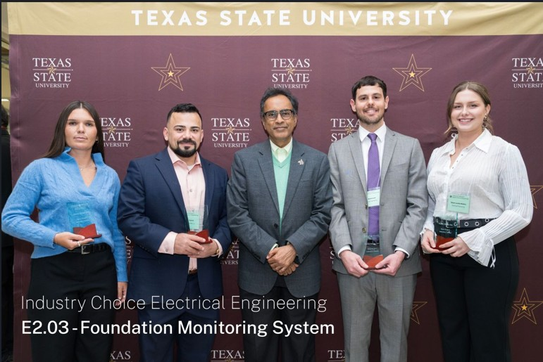

Sloan Louden-RobinsEE + Applied Math • Embedded • Sensors • Signal Processing

Foundation Monitoring System
A multi-sensor structural monitoring prototype designed to detect millimeter-scale
foundation movement using embedded sensing, wireless data acquisition,
and real-time analytics.
Project Overview
The Foundation Monitoring System was a senior design research project focused on
detecting small structural shifts in residential foundations. The team evaluated
multiple sensing approaches — including IMUs, Time-of-Flight sensors, radar, and
environmental sensing — to determine which methods were most effective for
millimeter-scale displacement monitoring.
The project combined sensor testing, data analysis, embedded prototyping, and system-level
integration to develop a proof-of-concept monitoring platform for long-term
residential use.
This project was developed as part of a senior engineering design effort centered
on early detection of residential foundation movement. Our work focused on comparing
sensing technologies under realistic monitoring conditions and identifying practical
tradeoffs between precision, stability, and deployability.
In addition to technical development, the project required coordination across
hardware, embedded systems, testing, and data analysis to produce a complete
prototype for Design Day demonstration.
Collaboration
Figure 1. Senior design team presenting the Foundation Monitoring System
(from left to right) Sloan Louden-Robins (PM) Will Rebenack, Orlando Torres, Cassidy Miskovitz.
Worked in a four-person multidisciplinary engineering team.
Collaborated across hardware, embedded systems, and data analysis
to design and validate a complete sensing pipeline.
Presented system architecture, sensor testing results, and prototype
demonstrations during Engineering Design Day.
My Role
Figure 2. Presenting the system architecture and sensor results
during Engineering Design Day Semester 1.
Project Manager: Coordinated civil teams, sponsors, and advisor
to align system design with project requirements.
Sensor Research: Evaluated and selected sensing technologies
using datasheets and experimental validation.
System Validation: Identified discrepancies between expected
and measured performance in embedded testing.
Data & ML: Built a Jupyter-based pipeline applying filtering
and machine learning to improve measurement accuracy.
System Architecture & Data Pipeline
We designed a modular, end-to-end sensing system where distributed nodes collect
data and transmit telemetry to a centralized Raspberry Pi gateway for logging
and real-time monitoring.
Figure. Simplified system architecture showing distributed sensor nodes,
wireless telemetry, central gateway aggregation, and monitoring interface.
System Overview
Sensor Nodes: ESP32-based modules interfacing with IMU, ToF, radar, and environmental sensors.
Communication: Wireless telemetry using structured messaging (JSON over Wi-Fi).
Gateway: Raspberry Pi handling data aggregation, validation, and storage.
Interface: Real-time dashboard for monitoring system behavior and trends.
System Performance (Representative)
Update rate: ~20–100 Hz depending on sensor + mode
Typical end-to-end latency: ~5–15 ms for acquisition loop
Comms reliability: 99%+ packet delivery observed in testing
Hardware Development & Sensor Integration
Will developed modular embedded hardware to enable rapid evaluation of multiple
sensing modalities within a unified system architecture.
Custom PCB: Integrated IMU sensors with embedded processing for displacement testing.
Modular Design: Enabled quick sensor swapping for comparative analysis.
Validation: Assessed sensor performance under controlled conditions to characterize noise, drift, and repeatability.
Figure 3. Prototype PCB integrating inertial sensors with embedded
processing for displacement monitoring.
Prototype Test Platform
Cassidy built prototype hardware assemblies to test sensor stability and repeatability.
Conducted controlled experiments to measure sensor drift and noise characteristics.
Used the platform to compare sensing techniques for detecting millimeter-scale motion.
Sensor Evaluation & Experimental Testing
Sensor Technologies Investigated
Inertial Measurement Units (IMUs): evaluated for detecting small angular shifts that could indicate foundation tilt.
Time-of-Flight (ToF) distance sensors: tested for direct measurement of displacement between structural reference points.
Radar sensing modules: investigated as a non-contact approach for detecting subtle structural movement.
Experimental Test Methodology
Built controlled experimental setups to measure sensor precision and stability.
Collected long-duration datasets to evaluate drift, noise, and repeatability.
Compared sensing approaches based on accuracy, reliability, and integration complexity.
Figure 4. Integrated system demonstration showing the monitoring platform
used to evaluate sensor performance and validate system behavior at design day semester 1.
Data Processing & Monitoring
I developed a data processing pipeline to analyze sensor performance in both
real-time and post-test environments.
Processing: Filtering and analysis to evaluate signal quality
Monitoring: Dashboard for real-time validation and anomaly detection
Logging: Stored datasets for drift, repeatability, and comparative analysis
Results & Key Findings
Performance Summary
Key Results
Precision: ToF sensors achieved ~0.6 mm standard deviation